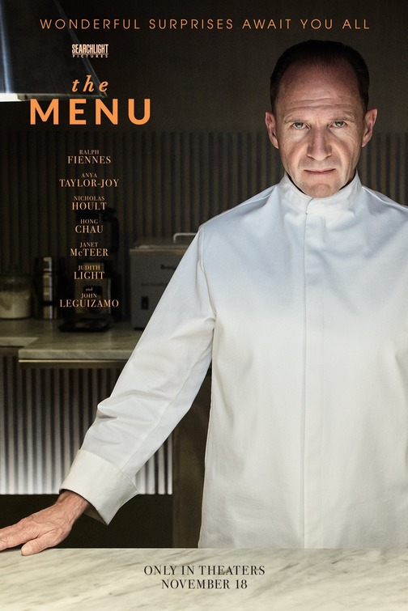
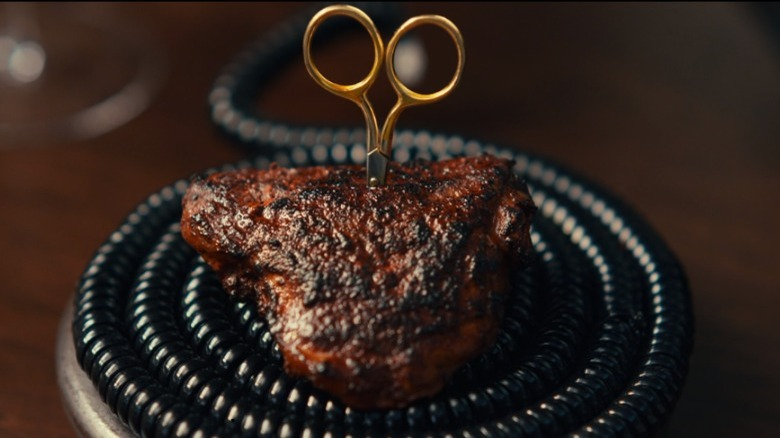

Rating | R
Runtime | 1h 47m
Release Date | 11.18.2022
Writers | Seth Reiss, Will Tracy
Director | Mark Mylod

Plot | A young couple travels to a remote island to eat at an exclusive restaurant where the chef has prepared a lavish menu, with some shocking surprises.